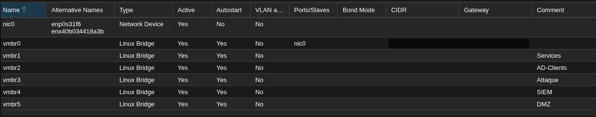
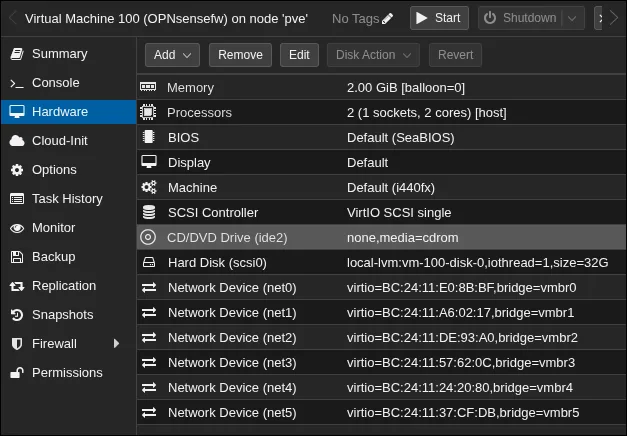
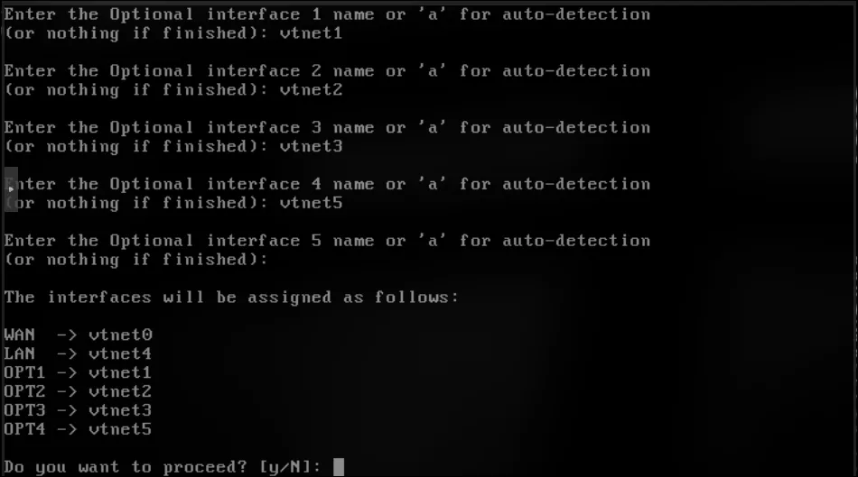
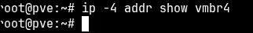
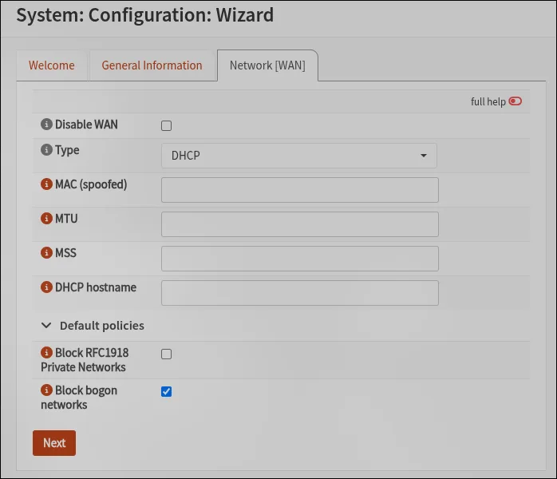

Home labActive
A segmented home lab on one workstation
One HP Z240, one hypervisor, one firewall VM, and six networks that can only talk to each other through it. The goal: attack Active Directory and vulnerable web apps from a Kali box, and watch it all happen in a SIEM.
Hypervisor, six bridges and the firewall are up. The WAN and the SIEM zone are configured, and the admin UI is reachable through an SSH tunnel only. Next: the four other zones, DHCP, firewall rules, then the machines.
01The constraint
The whole lab runs on an HP Z240: Intel Core i7 (7th gen, 4 cores / 8 threads) and 32 GB of RAM. The CPU is fine, because lab machines idle most of the time. RAM is the real budget, so Proxmox runs bare-metal (about 1.5 GB of overhead instead of a full desktop OS), and only the machines needed for a scenario are switched on.
| Machine | Zone | RAM |
|---|---|---|
| OPNsense (fixed, no ballooning) | all | 2 GB |
| Wazuh all-in-one | SIEM | 6–8 GB |
| Kali Linux | Attack | 4 GB |
| Debian + Docker (DVWA, bWAPP, Juice Shop) | DMZ | 2–3 GB |
| Windows Server 2022, domain controller | Services | 4 GB |
| Windows 10/11 workstation | AD clients | 4 GB |
Web scenario: firewall, Kali, DMZ and Wazuh, about 15 GB. AD scenario: firewall, Kali, DC, workstation and Wazuh, about 21 GB.
02Six zones, and why these six
Each zone is its own Linux bridge with no physical port, so a VM plugged into it can only leave through OPNsense. No VLANs: one bridge per zone is easier to read and to debug, and costs nothing.
| Bridge | Zone | OPNsense | Network |
|---|---|---|---|
vmbr0 | WAN | WAN | home network, DHCP |
vmbr4 | SIEM | LAN | 10.10.10.0/24 |
vmbr1 | Services (DC) | OPT1 | 10.10.40.0/24 |
vmbr2 | AD clients | OPT2 | 10.10.50.0/24 |
vmbr3 | Attack | OPT3 | 10.10.20.0/24 |
vmbr5 | DMZ | OPT4 | 10.10.30.0/24 |
Decisions worth defending
- The SIEM is the LAN. In OPNsense the LAN is the trusted interface with the anti-lockout rule, so it is where the admin UI lives. Putting it on the DMZ side would mean a compromised web app sits one hop from the firewall's admin page.
- Domain controller and workstations are split. That is how companies do it, and it forces Kerberoasting, DCSync and lateral movement to cross the firewall, where they can be filtered and logged. The cost: an explicit rule set for AD ports (53, 88, 135, 389/636, 445, 464, 3268-3269, dynamic RPC).
- The vulnerable apps are not next to the DC. I first wanted them in “Services”. A popped DVWA should not be a straight line to the domain, so they got their own DMZ bridge.

03Mapping interfaces by MAC, not by name
Proxmox calls the virtual NICs net0…net5, FreeBSD calls them vtnet0…vtnet5. The numbers usually line up, but nothing guarantees it. The MAC address is the only identifier both sides agree on, so every assignment was checked against it.


- Symptom
- The summary only listed
WAN → vtnet0, then only WAN and LAN. - Cause
- The noVNC console was half-drawn, so I pressed Enter to refresh it. For the assignment prompt, an empty answer means “done”.
- Fix
- Answered
Nat the confirmation and redid it. Then fixed the real problem: noVNC set to local scaling, so the console stops redrawing in a corner.
04Reaching the firewall without exposing it
The web UI only listens on 10.10.10.1, inside a bridge with no physical port: from my laptop, that network does not exist. Instead of opening the admin UI on the WAN, the Proxmox host gets an address in the SIEM zone and acts as a bastion.
# on the Proxmox host: vmbr4 = 10.10.10.2/24, no gateway
ip -4 addr show vmbr4
ping -c 3 10.10.10.1
sysctl net.ipv4.ip_forward # must be 0
# on my laptop
ssh -L 8443:10.10.10.1:443 root@pve # then https://localhost:8443ip_forward = 0 matters. If the host routed packets itself, it would bridge my home network and the lab and silently bypass the firewall.
- Symptom
ping 10.10.10.1→connect: Network is unreachable, andip -4 addr show vmbr4printed nothing.- Diagnosis
- “Unreachable” comes from the local kernel: no route, so the packet never left. Not a firewall issue.
/etc/network/interfacesstill hadvmbr4 inet manual; the new address sat ininterfaces.new. - Cause
- In Proxmox, OK only writes
interfaces.new. Apply Configuration copies it over and reloads.ifreload -aalone re-applied the old file. - Fix
- Apply Configuration, then the ping answered.

05First-run settings, with the reasons
| Setting | Value | Why |
|---|---|---|
| Hostname / domain | fw01 / lab.internal | .internal is reserved for private use; .local collides with mDNS and AD. |
| Timezone | Europe/Paris, on every machine | A SIEM rebuilding an attack timeline across hosts needs one clock. |
| Web UI protocol | HTTPS, self-signed | In HTTP, the root password crosses the network in clear. |
| Block RFC1918 on WAN | off | The WAN sits on my home network, which is private. Stateful filtering still drops unsolicited inbound traffic. |
| Block bogons | on | Addresses that should never appear on the internet. |
| Default root password | changed first | opnsense is in the public docs. |
